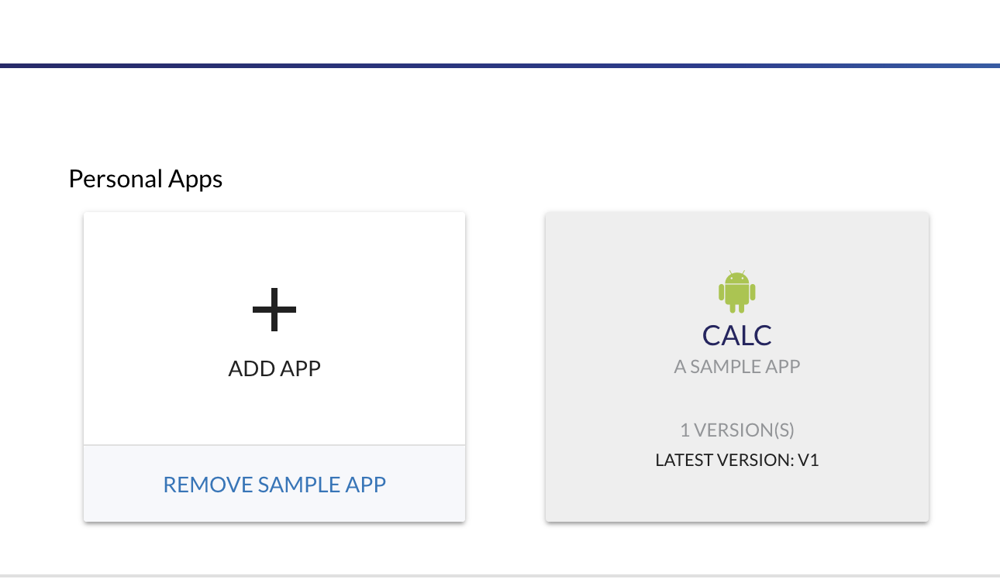
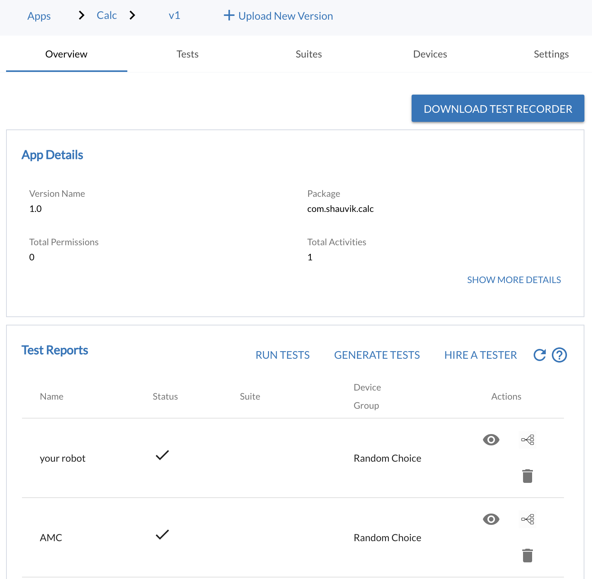
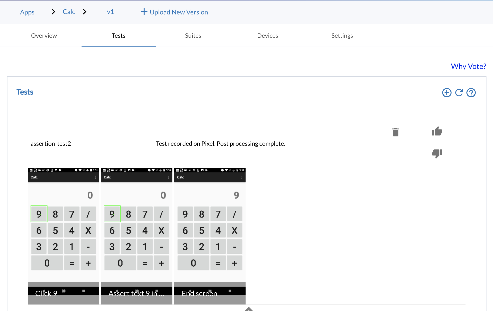
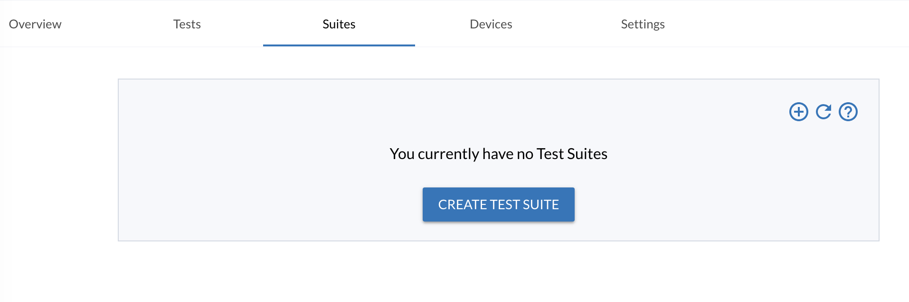
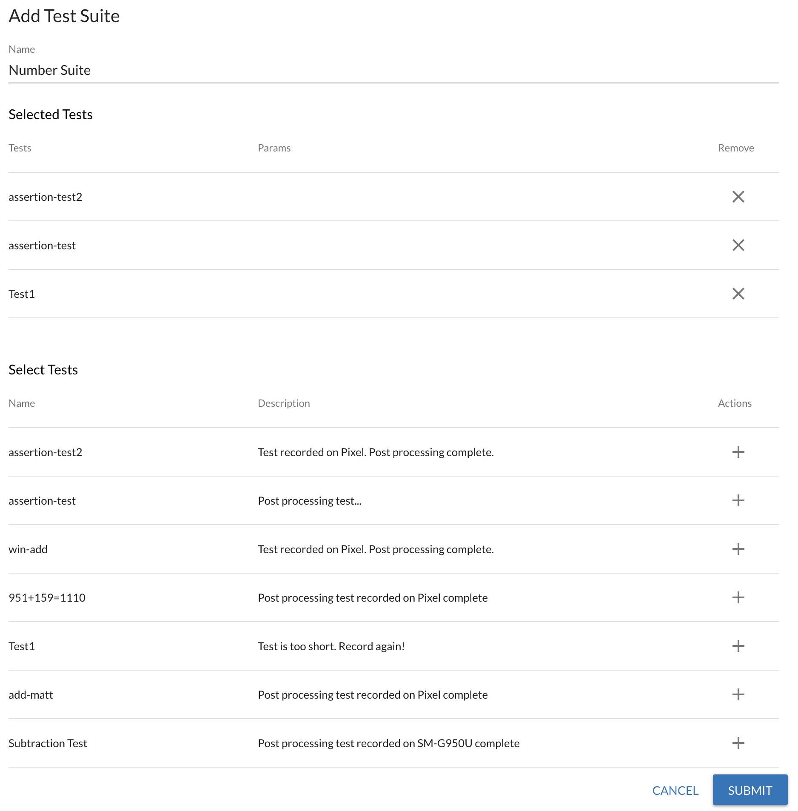
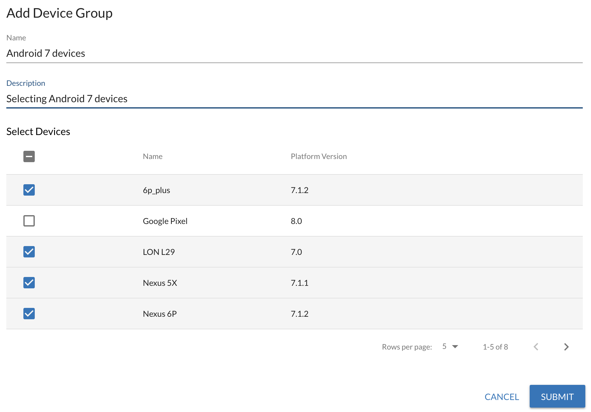
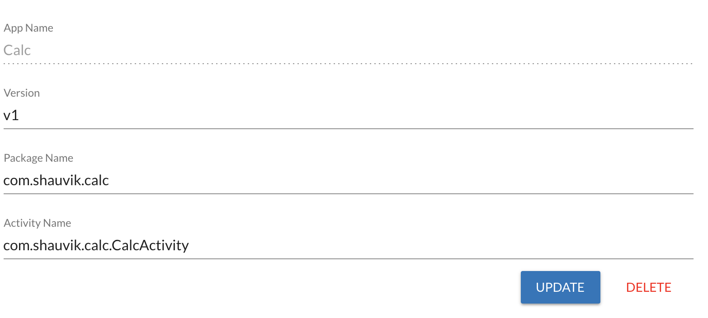

Testing with MoQuality Quickstart¶
-
Upload an app Upload an app on (http://app.moquality.com)
-
Create test cases using Recorder (only for Manual testing?): To create test cases, go the Tests tab and click on + in the Tests module to add a test. You can download the recorder for your machine. Login to the recorder and record a test. Read more about recording test cases here.
-
Create test suites (only for Manual testing?): Go to the Tests tab and click on + in the Test Suites module to create test suites. You can select a number of tests that will run in order when we execute them.
-
Create device group (only for Manual testing?): Go to the Devices tab. You can now select a custom device group or create your own.
-
Create a test report
(only for Manual testing?) Go to the Overview page and create a test report by clicking on + in the Test Reports module. Select one test suite and a device group to schedule runs for this test report.
For Automated Testing: Click on Generate Tests on the Overview Page and select the number of tests you want to generate and time limit.
- Reporting and executing tests Visit the guide.
Note: The test cases you create adapt to every version of the app you upload. So the test, test suites, and device groups you create show up for every new version. Only the overview page keeps changing because the test report runs on a particular version.
Detailed Dashboard Overview¶
Upload an App¶
-
Go to app.moquality.com and click on the Add APP box. 
-
Upload an app.
-
Enter the App detials such as name, description, and select the type of App (Android/iOS).
After uploading an, a page with multiple tabs is shown. Those tabs are:
-
Overview
-
Tests
-
Suites
-
Devices
-
Settings
We describe each of these tabs and their functionality. There is also a button with caption DOWNLOAD TEST RECORDER . Download the recorder if you want to record the testcases.
Overview page¶
The overview page provide the App and Test Reports details. Test Reports are described in detail in the Test Report Section. Here you can schedule the test runs recorded with Moquality recorder or Automatic Testing on a set of selected devices.

Tests page¶
Recording test cases
Writing test cases is hard. Using MoQuality test recorder, it is a matter of few clicks to record a test case. In the background, AI understands the test case and ensures it is playble across multiple devices and adaptible to future app versions and os updates.
Features:
- Perform any action that you will in your app
- Assertions which checks for text or widgets
- Convert demonstrations to tests and run it on any device on our cloud.
Viewing recorded tests:
Naviagate to Tests tab. This tab provides an overview of all the tests that have been recorded with the MoQuality Recorder. A test consist of a series of actions performed on an app on a device. It is displayed as a series of screenshot and a heilighted area indiciating the action widget.

Suite page¶
A test is a series of action that should be performed to cover a use case or check an assertion. All our tests always start after clearing any cache related to the app.
A test suite is a series of tests that should be run in an order. A test report is a test of these test suites. A test is created using the MQRecorder. After creating a few tests, you can create test suites.
Usecase ...
Creating a suite
Navigate to the Suite tab and click on the Create Test Suite.

Now name the Test Suite and select the tests that are part of it. You can create multiple test suites this way.

Devices page¶
We rent devices from various test infrastructure providers. Today we support around 50 devices and we are continuously adding new devices into our system as and when our users need them.
A device group is a collection of devices on which you want to run tests on. A user can create a group of devices you want to run tests on. There are few presets available such as Google Devices, Samsung Devices, Popular Devices.

In order to create a custom device group click the + button. Custom device groups are important in many situations. For example, a user may want to run the apps on devices that have the latest android version, or to confirm it works on old versions. Another example is to create a group of devices from a certain manufacturer, or a user wants to create a group of popular devices. An example is shown below to create a custom group

Settings page¶
Here you can change the name of the app and version. You can also specify Package Name of the app and launchable activity name. If you are not sure, do not change these fields.

Reporting and Executing Tests¶
Visit the guide